library(tidyverse)
library(sf)
library(rnaturalearth)
library(rnaturalearthdata)
library(ggspatial)
library(patchwork)Mapping with ggplot2 — part 2
Setup
Libraries
Data
minke_df <- read_csv("data/minke.csv")
smb <- read_csv("data/smb_summary.csv")
# Convert minke whale positions to sf
minke_sf <- minke_df |>
st_as_sf(coords = c("lon", "lat"), crs = 4326)
# Country polygons from rnaturalearth
iceland_sf <- ne_countries(country = "Iceland", scale = "medium")
world_sf <- ne_countries(scale = "medium")
# Nephrops functional units — used for labelling examples
nfu <- read_sf("data/nephrops_fu.gpkg")
# Iceland coastline and depth contours — used in the mixed-CRS example
coast <- read_sf("data/iceland_coastline.gpkg")
contours <- read_sf("data/iceland_contours.gpkg")
# SMB 2019 tows, as both a data frame and an sf object
smb2019 <- smb |> filter(year == 2019)
smb2019_pts <- smb2019 |>
st_as_sf(coords = c("lon1", "lat1"), crs = 4326)From geom_polygon() to geom_sf()
In part 1 we used map_data() from the maps package to get country outlines as plain data frames, plotted with geom_polygon(). That approach works but has real limitations:
- it requires a
groupcolumn to draw multi-part polygons correctly; - it cannot represent lines or point geometries;
- the projection (
coord_quickmap()) is only an approximation.
The modern approach is geom_sf(). It accepts any sf object — point, line, or polygon — and pairs with coord_sf() for exact coordinate system handling. Because the geometry is stored in the sf object itself, there is no need to manage coordinate column names or polygon ordering manually.
iceland_df <- map_data("world", region = "Iceland")
p_old <- ggplot() +
geom_polygon(data = iceland_df,
aes(long, lat, group = group),
fill = "grey80", colour = "white") +
coord_quickmap(xlim = c(-27, -11), ylim = c(62.5, 67.5)) +
labs(title = "maps / geom_polygon (part 1 approach)") +
theme_bw()
p_new <- ggplot() +
geom_sf(data = iceland_sf, fill = "grey80", colour = "white") +
coord_sf(xlim = c(-27, -11), ylim = c(62.5, 67.5)) +
labs(title = "rnaturalearth / geom_sf (modern approach)") +
theme_bw()
p_old + p_new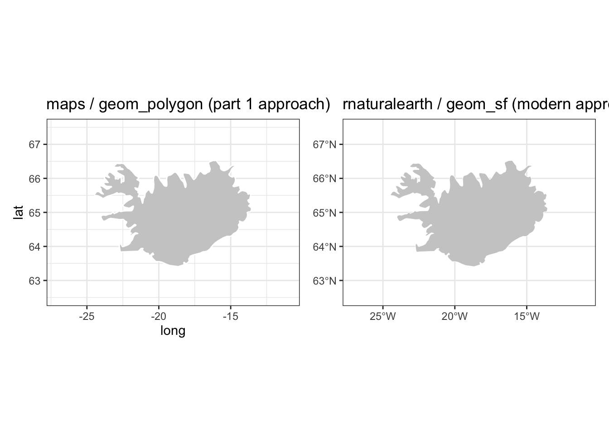
geom_sf() selects the correct rendering automatically (points, lines, or filled polygons) based on the geometry type stored in the sf object. A single call handles all geometry types.
Basemaps with rnaturalearth
The rnaturalearth package provides country and coastline polygons as sf objects at several resolutions ("small", "medium", "large"). It is a well-maintained replacement for the maps package for basemap data.
ggplot() +
geom_sf(data = iceland_sf, fill = "grey80", colour = "white") +
theme_bw()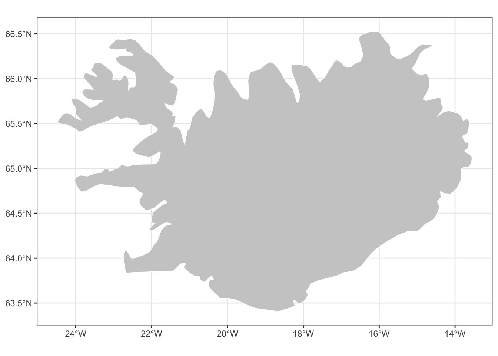
Adding data on top follows the same layering logic as part 1: basemap first, then data layers. Here we overlay the minke whale observations:
ggplot() +
geom_sf(data = iceland_sf, fill = "grey80") +
geom_sf(data = minke_sf, aes(colour = sex), size = 2, alpha = 0.7) +
scale_colour_brewer(name = "Sex", palette = "Set1") +
scale_x_continuous(NULL, NULL) +
scale_y_continuous(NULL, NULL) +
theme_bw()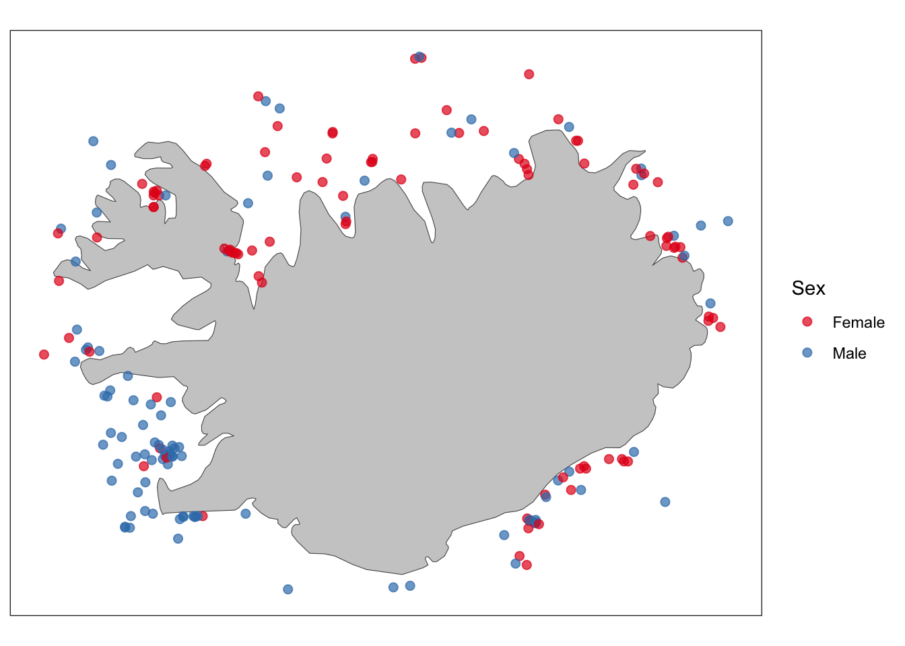
Zoom with coord_sf(xlim, ylim). Values are in the units of the active CRS — decimal degrees for the WGS84 default. Recall from part 1 that setting limits inside coord_sf() zooms the view without clipping any features:
ggplot() +
geom_sf(data = world_sf, fill = "grey80") +
geom_sf(data = minke_sf, aes(colour = sex), alpha = 0.8) +
coord_sf(xlim = c(-24, -18), ylim = c(63, 65)) +
scale_colour_brewer(name = "Sex", palette = "Set1") +
# scale_x_continuous(NULL, NULL) +
# scale_y_continuous(NULL, NULL) +
theme_bw()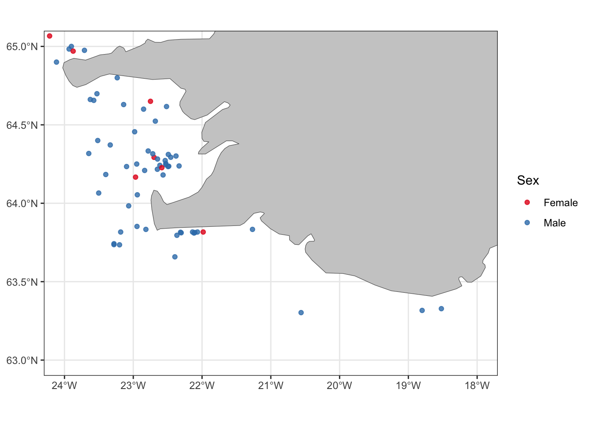
Projections with coord_sf()
coord_sf() controls the CRS used when rendering all layers. Every layer is automatically reprojected to match — you never need to reproject data manually just for plotting. This connects directly to what you learned in the CRS chapter: pass any EPSG code to the crs argument.
p_base <- ggplot() +
geom_sf(data = iceland_sf, fill = "grey80") +
geom_sf(data = minke_sf, aes(colour = sex), alpha = 0.7) +
scale_colour_brewer(name = "Sex", palette = "Set1") +
scale_x_continuous(NULL, NULL) +
scale_y_continuous(NULL, NULL)
p1 <- p_base + coord_sf(crs = 4326) +
labs(title = "WGS84 (geographic)", subtitle = "EPSG:4326")
p2 <- p_base + coord_sf(crs = 3057) +
labs(title = "ISN93 / Lambert conformal", subtitle = "EPSG:3057")
p3 <- p_base + coord_sf(crs = st_crs("+proj=stere +lat_0=90 +lat_ts=65 +lon_0=-19")) +
labs(title = "Polar stereographic", subtitle = "centred on Iceland")
p1 + p2 + p3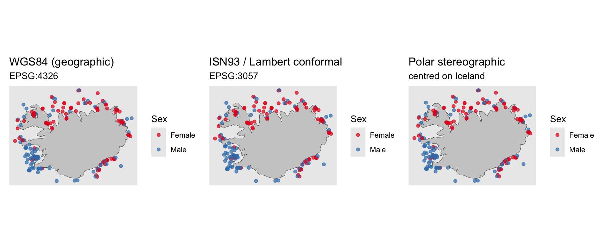
NotePrefer EPSG codes over proj strings
The first two panels use EPSG codes (crs = 4326, crs = 3057). This is more robust than raw proj strings (e.g. "+proj=laea ..."), which became unreliable after PROJ 6. Use crsuggest::suggest_crs() to find the right EPSG code for your area. Proj strings are still needed for custom projections that have no EPSG entry, as in the third panel.
Mixing layers with different CRS
When layers come from different sources with different CRS, coord_sf() aligns them automatically. Without an explicit crs argument it uses the CRS of the first layer, which can produce unexpected results if the layer order changes. Setting it explicitly is safer:
# coast: Iceland coastline in a projected LAEA CRS
# contours: depth contours in WGS84 (EPSG:4326)
# — these would not align without coord_sf() handling the reprojection
# Without explicit CRS — display CRS taken from first layer (contours = WGS84)
p_implicit <- ggplot() +
geom_sf(data = contours, colour = "steelblue", linewidth = 0.3) +
geom_sf(data = coast, fill = "grey80") +
theme_bw() +
labs(title = "Implicit CRS (first layer wins)", subtitle = "WGS84")
# With explicit CRS — ISN2016 / LAEA Iceland (Iceland's official CRS)
p_explicit <- ggplot() +
geom_sf(data = contours, colour = "steelblue", linewidth = 0.3) +
geom_sf(data = coast, fill = "grey80") +
coord_sf(crs = 8088) +
theme_bw() +
labs(title = "Explicit CRS", subtitle = "ISN2016 / LAEA Iceland (EPSG:8088)")
p_implicit + p_explicit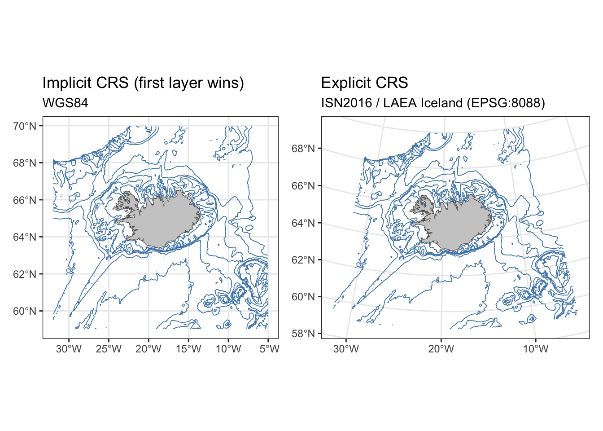
Important
Always set crs explicitly in coord_sf() when combining layers from different sources. The implicit default can change silently if you reorder your layers.
Colour scales
Choosing an appropriate colour scale is one of the most consequential decisions in map design. By this point in the course you are working with geom_sf() and real polygon data, so the stakes are higher — a poor choice can completely hide spatial structure.
Continuous data: viridis palettes
The viridis palettes ("viridis", "magma", "plasma", "inferno", "cividis", "mako", "rocket", "turbo") are built into ggplot2. They are perceptually uniform, readable in greyscale, and colour-blind safe — a reliable default for scientific maps:
s <- smb |>
filter(year == 2019) |>
group_by(ir_lon, ir_lat) |>
summarise(Cod = mean(cod_n), .groups = "drop") |>
st_as_sf(coords = c("ir_lon", "ir_lat"), crs = 4326)
p_raster <- ggplot() +
geom_sf(data = s, aes(colour = Cod), size = 3) +
geom_sf(data = iceland_sf, fill = "grey60", colour = NA) +
coord_sf(xlim = c(-27, -11), ylim = c(62.5, 67.5)) +
scale_x_continuous(NULL, NULL) +
scale_y_continuous(NULL, NULL) +
theme_bw()
p1 <- p_raster + scale_colour_viridis_c(option = "D", name = "viridis")
p2 <- p_raster + scale_colour_viridis_c(option = "B", direction = -1,
name = "magma (rev)")
p3 <- p_raster + scale_colour_viridis_c(option = "C", name = "plasma")
p1 + p2 + p3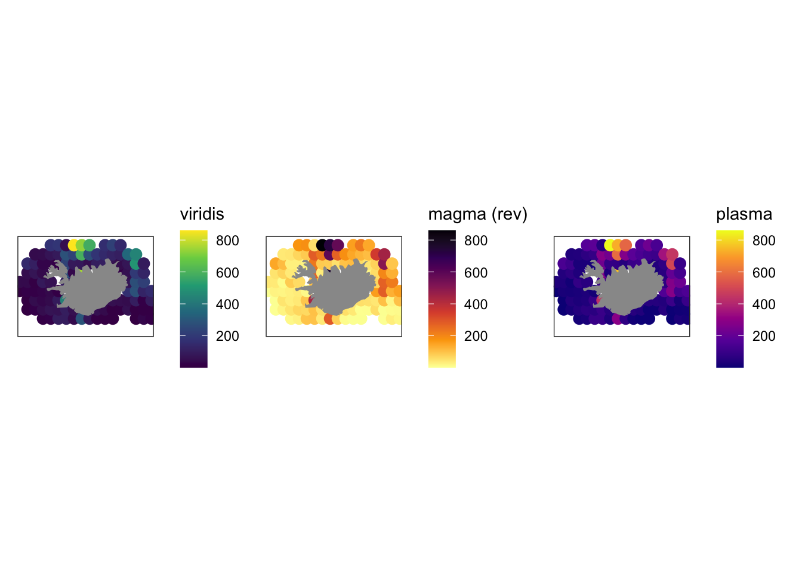
Colour scale transformations
Catch data are strongly right-skewed: most tows catch few fish and a few catch a lot. On an untransformed scale, almost all the colour gradient is consumed by the rare high values, obscuring variation among typical tows. Transforming the scale spreads the gradient more evenly:
p_log <- p_raster +
scale_colour_viridis_c(option = "B", direction = -1,
transform = "log1p", name = "log1p")
p_sqrt <- p_raster +
scale_colour_viridis_c(option = "B", direction = -1,
transform = "sqrt", name = "sqrt")
p_log + p_sqrt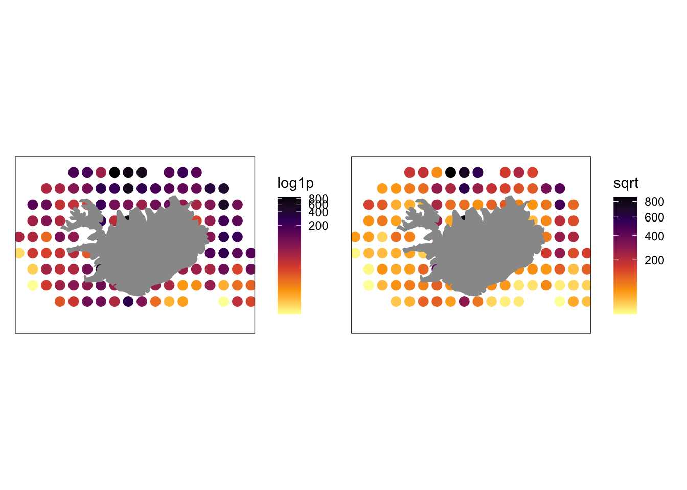
log1p (log(x + 1)) handles zeros and compresses high values strongly. sqrt is a milder compression. Both typically reveal spatial structure that a linear scale hides.
Discrete intervals with cut()
Binning into labelled classes trades precision for legibility — often the right choice for reports or presentations:
s_cut <- s |>
mutate(Cod_class = cut(Cod,
breaks = c(0, 23, 62, 145, Inf),
labels = c("Low", "Medium", "High", "Very high"),
include.lowest = TRUE))
ggplot() +
geom_sf(data = s_cut, aes(colour = Cod_class), size = 3) +
geom_sf(data = iceland_sf, fill = "grey60", colour = NA) +
coord_sf(xlim = c(-27, -11), ylim = c(62.5, 67.5)) +
scale_colour_viridis_d(option = "B", direction = -1,
name = "Cod abundance",
na.value = "grey80") +
scale_x_continuous(NULL, NULL) +
scale_y_continuous(NULL, NULL) +
theme_bw() +
labs(title = "Cod abundance classes — SMB 2019")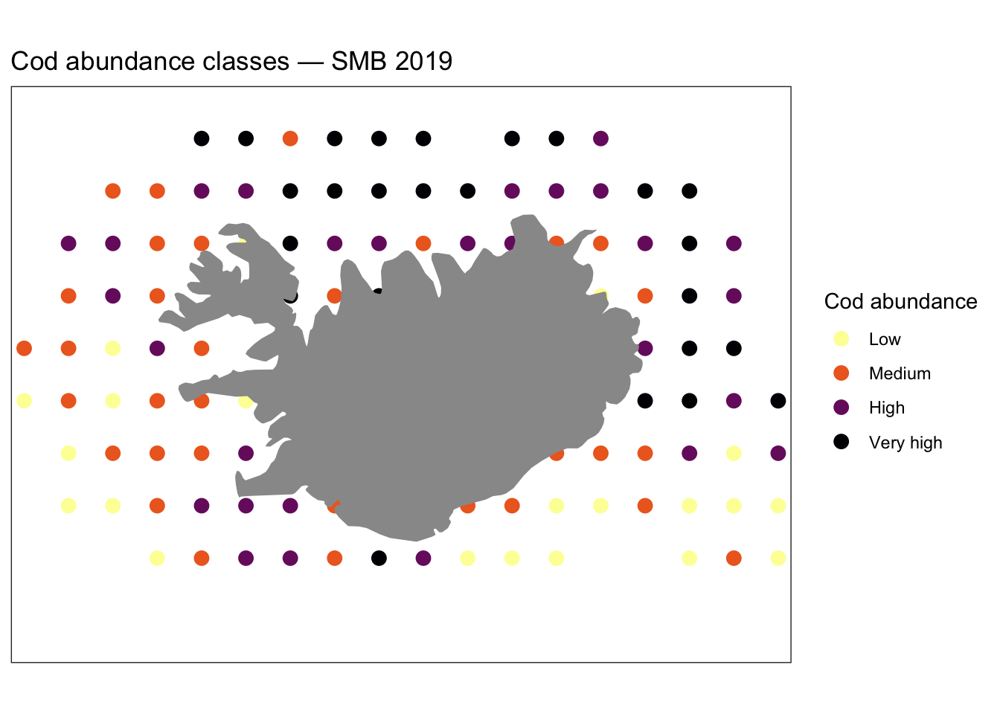
NoteWhich colour scale to choose?
| Situation | Recommended approach |
|---|---|
| Precise values matter, data roughly symmetric | Continuous gradient |
| Data are strongly right-skewed (e.g. catch counts) | Continuous with transform = "log1p" or "sqrt" |
| Communicating to a non-technical audience or for a report | Discrete bins with cut() |
Labels: geom_sf_text() and geom_sf_label()
geom_sf_text() and geom_sf_label() place text at the geometry’s position (centroid for polygons). A reliable pattern is to compute centroids first with st_centroid() and use those as a separate label layer:
nfu_centroids <- st_centroid(nfu)
ggplot() +
geom_sf(data = nfu, fill = NA, colour = "steelblue") +
geom_sf_label(data = nfu_centroids,
aes(label = name),
size = 2.5,
label.padding = unit(0.15, "lines")) +
theme_bw() +
labs(title = "Nephrops functional units")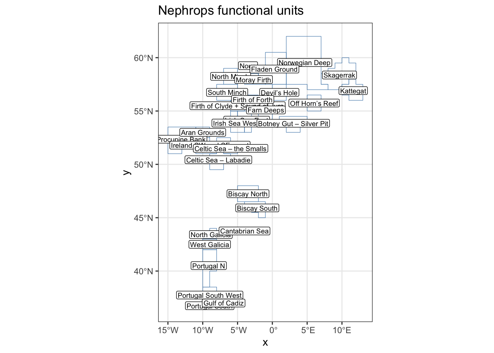
geom_sf_text() omits the label background box. Use it where you want lighter annotation without the visual weight of a rectangle.
TipExercise
Replace geom_sf_label() with geom_sf_text(). Then try mapping name to colour to give each unit a distinct colour. Does it improve or clutter the map?
Facetting
Facetting splits data into panels by one or more grouping variables. It is particularly effective for showing how spatial distributions change over time.
facet_wrap()
facet_wrap() arranges panels in a ribbon, filling rows left to right. Here we convert the 2019 SMB tows to sf and map cod abundance for six survey years:
smb_sel_sf <- smb |>
filter(year %in% c(1995, 2000, 2005, 2010, 2015, 2019)) |>
st_as_sf(coords = c("lon1", "lat1"), crs = 4326)
ggplot() +
geom_sf(data = iceland_sf, fill = "grey80") +
geom_sf(data = smb_sel_sf, aes(size = cod_n),
alpha = 0.15, colour = "red") +
scale_size_area(max_size = 12, name = "Cod (n)") +
coord_sf(xlim = c(-27, -11), ylim = c(62.5, 67.5)) +
scale_x_continuous(NULL, NULL) +
scale_y_continuous(NULL, NULL) +
facet_wrap(~ year) +
theme_bw()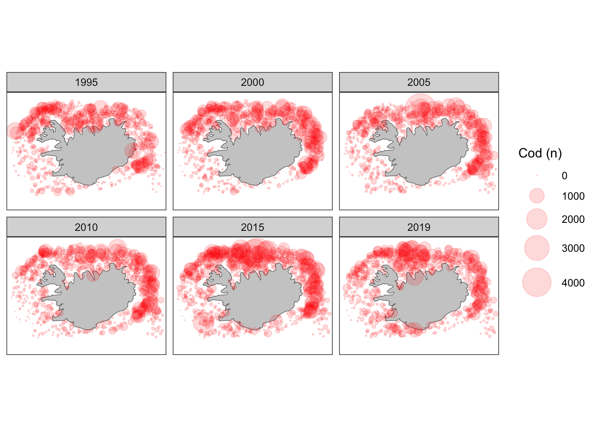
facet_grid()
facet_grid(rows ~ cols) creates a matrix of panels. This is useful for comparing two variables simultaneously — here species and year. We pivot to long format first so both species can act as a facet variable:
smb_long_sf <- smb |>
filter(year %in% c(2005, 2010, 2015, 2019)) |>
pivot_longer(cols = c(cod_n, haddock_n),
names_to = "species",
values_to = "n") |>
mutate(species = case_match(species,
"cod_n" ~ "Cod",
"haddock_n" ~ "Haddock")) |>
st_as_sf(coords = c("lon1", "lat1"), crs = 4326)
ggplot() +
geom_sf(data = iceland_sf, fill = "grey80") +
geom_sf(data = smb_long_sf, aes(size = n),
alpha = 0.2, colour = "red") +
scale_size_area(max_size = 8, name = "Catch (n)") +
coord_sf(xlim = c(-27, -11), ylim = c(62.5, 67.5)) +
scale_x_continuous(NULL, NULL) +
scale_y_continuous(NULL, NULL) +
facet_grid(species ~ year) +
theme_bw()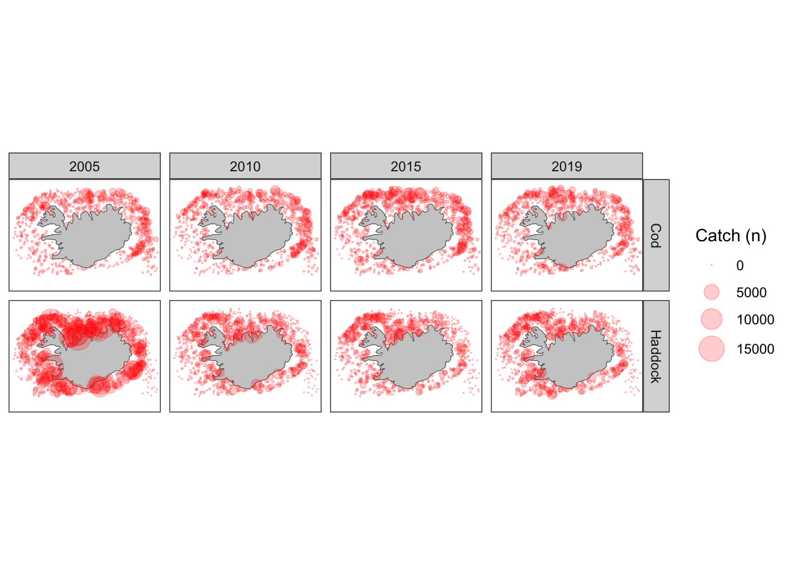
In facet_grid(rows ~ cols), the first variable defines rows and the second defines columns. Use . ~ year to facet columns only, or species ~ . for rows only. Note the . is a placeholder meaning “no variable”.
TipExercise
Add saithe_n as a third species to the pivot_longer() call. Does the three-row grid remain legible, or would facet_wrap() be a better choice here?
Geographic degree labels
coord_sf() formats axis labels automatically with degree symbols and cardinal direction suffixes (e.g. 25°W, 63°N). However, it delegates break placement to sf::st_graticule() internally and largely ignores scale_x_continuous(breaks = ...), so there is no direct way to control where tick marks fall from within coord_sf(). The helper functions below work around this by overriding the scale layer directly, giving precise control over break positions:
scale_longitude <- function(min = -180, max = 180, step = 1, ...) {
breaks <- seq(min, max, step)
labels <- ifelse(breaks < 0,
paste0(abs(breaks), "\u00B0W"),
paste0(breaks, "\u00B0E"))
scale_x_continuous(name = NULL, breaks = breaks, labels = labels, ...)
}
scale_latitude <- function(min = -90, max = 90, step = 0.5, ...) {
breaks <- seq(min, max, step)
labels <- ifelse(breaks < 0,
paste0(abs(breaks), "\u00B0S"),
paste0(breaks, "\u00B0N"))
scale_y_continuous(name = NULL, breaks = breaks, labels = labels, ...)
}
ggplot() +
geom_sf(data = iceland_sf, fill = "grey80") +
coord_sf(xlim = c(-25, -12), ylim = c(63, 67)) +
scale_longitude(min = -25, max = -12, step = 2) +
scale_latitude( min = 63, max = 67, step = 1) +
theme_bw() +
labs(title = "Controlled degree-label breaks")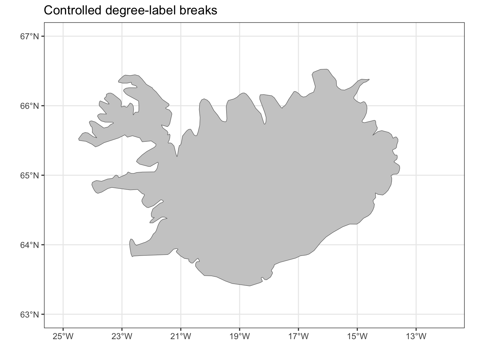
Note
If the automatic break placement looks fine, you can suppress axis labels entirely with scale_x_continuous(NULL, NULL) and scale_y_continuous(NULL, NULL), which is what the facet examples above do to save space.
Map embellishments
Scale bars and north arrows with ggspatial
The ggspatial package adds cartographic annotations to geom_sf() maps. annotation_scale() draws a scale bar that updates automatically when you zoom; annotation_north_arrow() adds a north arrow:
ggplot() +
geom_sf(data = iceland_sf, fill = "grey80") +
annotation_scale(location = "bl", width_hint = 0.4) +
annotation_north_arrow(
location = "bl",
which_north = "true",
pad_x = unit(0.6, "in"),
pad_y = unit(0.4, "in"),
style = north_arrow_fancy_orienteering
) +
coord_sf() +
theme_bw() +
labs(title = "Scale bar and north arrow")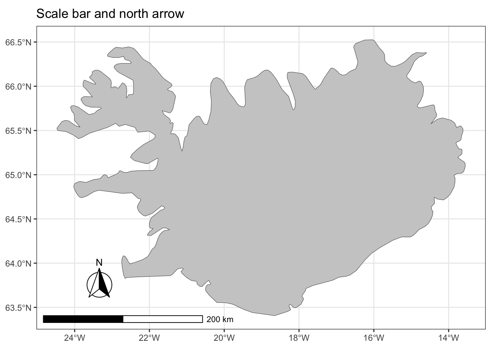
Themes for maps
theme_bw() is a good general-purpose theme that keeps axis labels and grid lines, which aid spatial orientation. theme_void() strips everything — axes, grid lines, and background — producing a cleaner result for publication figures that already carry a scale bar and north arrow as their own spatial reference:
ggplot() +
geom_sf(data = iceland_sf, fill = "grey85", colour = "white") +
geom_sf(data = minke_sf, aes(colour = sex), size = 1.8, alpha = 0.8) +
scale_colour_brewer(name = "Sex", palette = "Set1") +
annotation_scale(location = "br") +
annotation_north_arrow(
location = "tl",
style = north_arrow_minimal,
height = unit(0.8, "cm"),
width = unit(0.8, "cm")
) +
coord_sf() +
theme_void() +
theme(legend.position = "bottom",
plot.title = element_text(face = "bold")) +
labs(title = "Minke whale sightings",
caption = "Source: MFRI")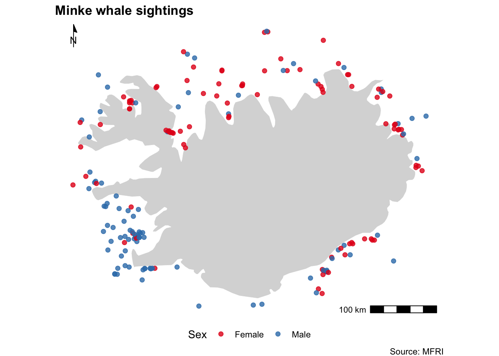
Use theme_void() when the map is the entire figure and spatial context comes from its own annotations. Use theme_bw() when the map sits alongside other plots or when axis labels help readers orient themselves.
Inset maps with inset_element()
inset_element() from patchwork places one plot inside another — useful for a small context map inside a detailed regional map. Here we derive the bounding box of the detail map programmatically so the red rectangle always stays in sync:
# Define the extent of the detail map explicitly so we can reuse it
detail_xlim <- c(-27, -11)
detail_ylim <- c(62.5, 67.5)
context_map <- ggplot() +
geom_sf(data = world_sf, fill = "grey80", colour = "white",
linewidth = 0.2) +
geom_rect(aes(xmin = detail_xlim[1], xmax = detail_xlim[2],
ymin = detail_ylim[1], ymax = detail_ylim[2]),
fill = NA, colour = "red", linewidth = 1) +
coord_sf(xlim = c(-40, 30), ylim = c(45, 80)) +
theme_void()
detail_map <- ggplot() +
geom_sf(data = iceland_sf, fill = "grey80") +
geom_sf(data = minke_sf, aes(colour = sex), alpha = 0.8) +
scale_colour_brewer(name = "Sex", palette = "Set1") +
coord_sf(xlim = detail_xlim, ylim = detail_ylim) +
theme_bw() +
labs(title = "Minke whale sightings")
detail_map +
inset_element(context_map,
left = 0.65, right = 1.0,
bottom = 0.0, top = 0.35)
TipExercise
Move the inset to the top-left corner by adjusting the left, right, bottom, and top arguments. Then try making the context map show a wider extent (e.g. the full North Atlantic) and see whether the inset remains informative at that scale.
Gridding point data with st_make_grid()
In part 1, the grade() function provided a quick way to bin points to a regular lon–lat grid. A more rigorous approach uses st_make_grid() to create proper sf polygon cells, then a spatial join to aggregate:
bbox_sfc <- st_bbox(c(xmin = -27, xmax = -11,
ymin = 62.5, ymax = 67.5),
crs = 4326) |>
st_as_sfc()
# Create the grid and label each cell with a unique ID
grid_sf <- st_make_grid(bbox_sfc,
cellsize = c(0.5, 0.25),
what = "polygons") |>
st_as_sf() |>
mutate(cell_id = row_number())
# Spatial join: each tow point picks up the cell it falls in
grid_summary <- grid_sf |>
st_join(smb2019_pts |> select(cod_n)) |>
group_by(cell_id) |> # group by cell, not geometry
summarise(Cod = mean(cod_n, na.rm = TRUE), .groups = "drop")
ggplot() +
geom_sf(data = grid_summary, aes(fill = Cod), colour = NA) +
geom_sf(data = iceland_sf, fill = "grey60") +
coord_sf(xlim = c(-27, -11), ylim = c(62.5, 67.5)) +
scale_fill_viridis_c(option = "B",
direction = -1,
transform = "log1p",
name = "Mean cod (n)\n(log scale)",
na.value = "white") +
scale_x_continuous(NULL, NULL) +
scale_y_continuous(NULL, NULL) +
theme_bw() +
labs(title = "Cod catch — spatial polygon grid (SMB 2019)",
caption = "Grid: 0.5° × 0.25°; cells with no tows shown in white")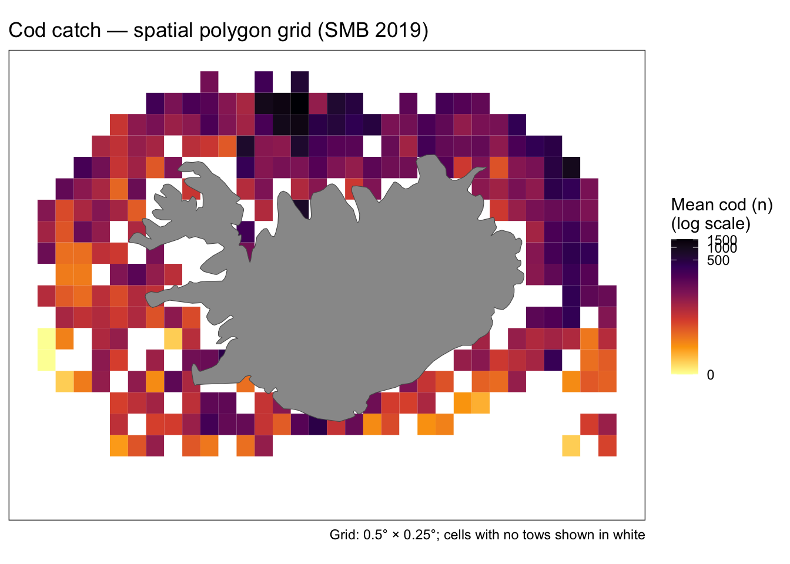
This approach is more rigorous than grade() because the grid cells are true sf polygons with a known CRS, so the result integrates cleanly with other spatial operations (e.g. clipping to an EEZ, spatial filtering).
Note
grade() vs st_make_grid()
grade() + geom_tile() |
st_make_grid() + st_join() |
|
|---|---|---|
Requires sf? |
No | Yes |
| Result is spatial? | No (data frame) | Yes (sf object) |
| CRS-aware? | No | Yes |
| Suits further spatial ops? | No | Yes |
| Speed | Fast | Slower for large data |
Use grade() for quick exploration; use st_make_grid() when the gridded output needs to participate in further spatial analysis or be exported as a spatial file.
TipExercise
Change the grid resolution to cellsize = c(1.0, 0.5) (ICES rectangle size). Compare the result to the ICES rectangle summary from part 1 — do they agree?
Case study: fishing intensity with patchwork
The OSPAR otter trawl intensity layer is a large, real-world polygon dataset with strongly right-skewed values, making it an ideal test case for the colour-scale techniques introduced above.
ospar_int <- read_sf("data/OSPAR_intensity_Otter_2015.gpkg") |>
select(FishingH, KWfishingH, SurfSAR)First, inspect the raw values to understand the skew:
ggplot(ospar_int) +
geom_sf(aes(fill = SurfSAR), colour = NA) +
scale_fill_viridis_c(option = "plasma") +
theme_bw() +
labs(title = "SurfSAR — raw scale",
subtitle = "High skew obscures most spatial variation")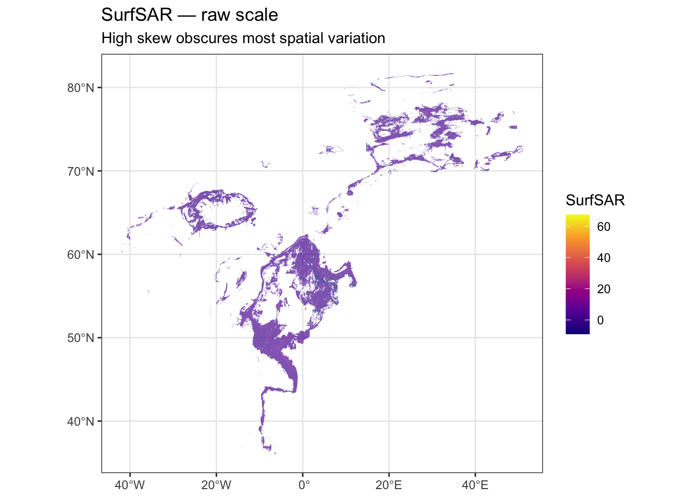
A log1p transform reveals the full spatial structure:
ggplot(ospar_int) +
geom_sf(aes(fill = SurfSAR), colour = NA) +
scale_fill_viridis_c(option = "plasma",
direction = -1,
transform = "log1p",
name = "SurfSAR (log)") +
labs(title = "Surface swept area ratio",
subtitle = "OSPAR VMS data 2015",
caption = "Source: OSPAR Commission") +
theme_bw()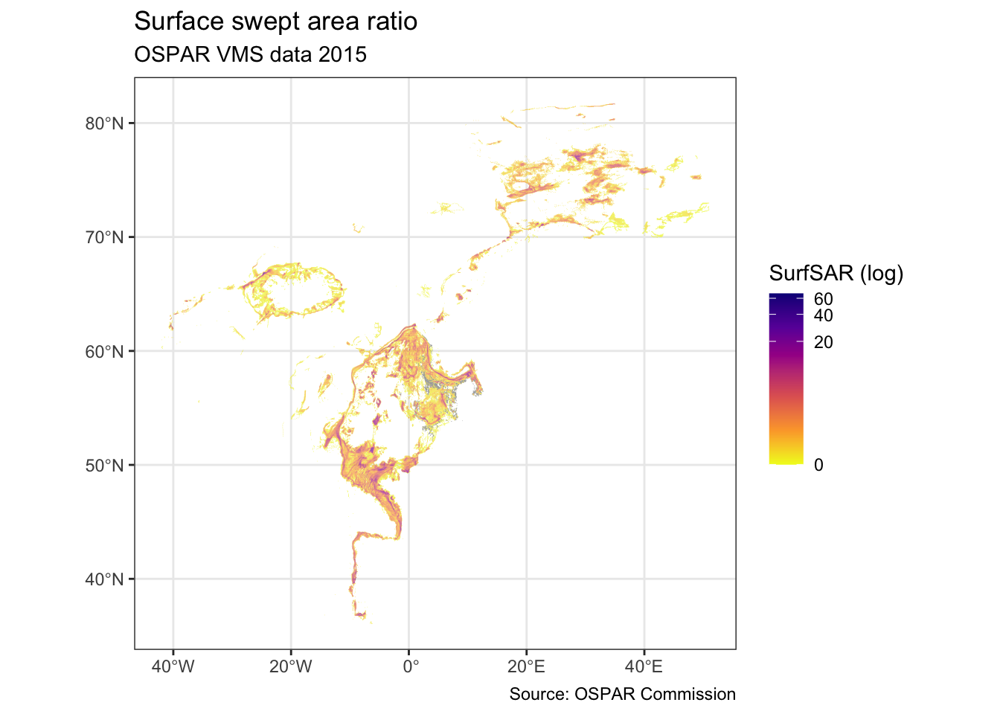
Comparing two effort metrics
SurfSAR is normalised by cell area; KWfishingH weights fishing hours by vessel engine power. Placing them side by side with patchwork lets you compare their spatial patterns directly:
p_sar <- ggplot(ospar_int) +
geom_sf(aes(fill = SurfSAR), colour = NA) +
scale_fill_viridis_c(option = "viridis",
direction = -1,
transform = "log1p",
name = "SurfSAR (log)") +
labs(title = "Surface swept area ratio") +
theme_bw() +
theme(axis.text = element_blank(),
axis.ticks = element_blank())
p_kw <- ggplot(ospar_int) +
geom_sf(aes(fill = KWfishingH), colour = NA) +
scale_fill_viridis_c(option = "viridis",
direction = -1,
transform = "log1p",
name = "kW·h (log)") +
labs(title = "Effort (kW-fishing hours)") +
theme_bw() +
theme(axis.text = element_blank(),
axis.ticks = element_blank())
p_sar + p_kw +
plot_annotation(
title = "Otter trawl fishing intensity — North-East Atlantic, 2015",
caption = "Source: OSPAR Commission",
theme = theme(plot.title = element_text(face = "bold"))
)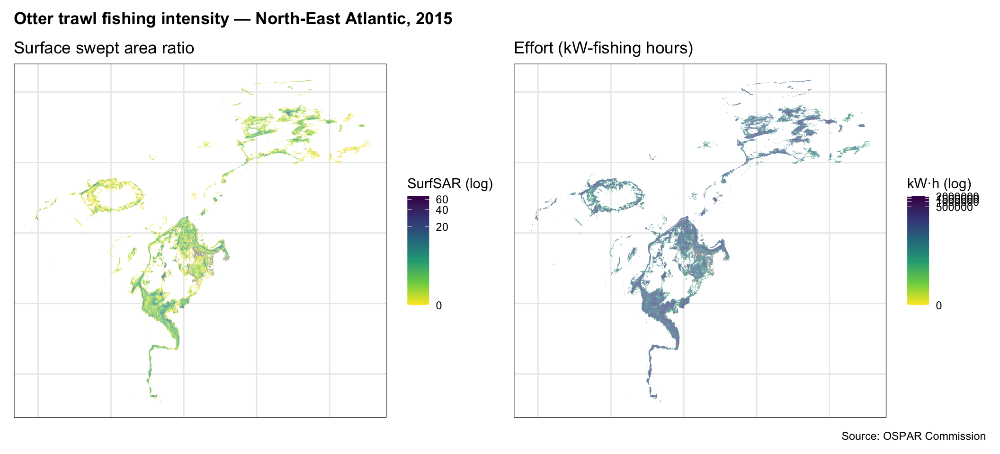
Both panels use the same viridis palette and direction so the colours are directly comparable. Areas with many tows by small vessels can show high FishingH but modest KWfishingH; a few large industrial vessels can dominate KWfishingH while contributing fewer hours.
NoteExercise
Work through these steps in order:
Subset. Filter the OSPAR layer to the North Sea (roughly −3° to 9°E, 51° to 57°N) using
st_crop(). Recreate the two-panel patchwork for this subregion. Does the spatial pattern look different at this finer scale?Extend. The
select()call in the data-loading chunk above dropsFishingH. Add it back, then add a third panel showingFishingHon the same log1p / viridis scale. Useplot_layout(ncol = 3)to arrange all three panels in a single row.Reflect. The two original panels used different viridis options (
plasmavsinferno) in the original file. Both now use"viridis". What was the problem with using different palettes for a side-by-side comparison, and when might deliberately different palettes be appropriate?
Final exercise
Bring together the techniques from both sessions:
- Choose a species from
is_smb_biological.csv. Join it tois_smb_stations.csvonid. Fill zeros for stations where the species was absent. - Convert the stations to
sfand create afacet_wrap()map showing the species’ spatial distribution for five or more years, using anst_make_grid()summary with an appropriate colour scale and transformation. - Add properly formatted degree-labelled axes (using
scale_longitude()/scale_latitude()), a scale bar, and a north arrow. - Compose a final two-panel figure with
patchwork: your facetted map on the left, and a time-series line chart of total annual catch for the same species on the right.